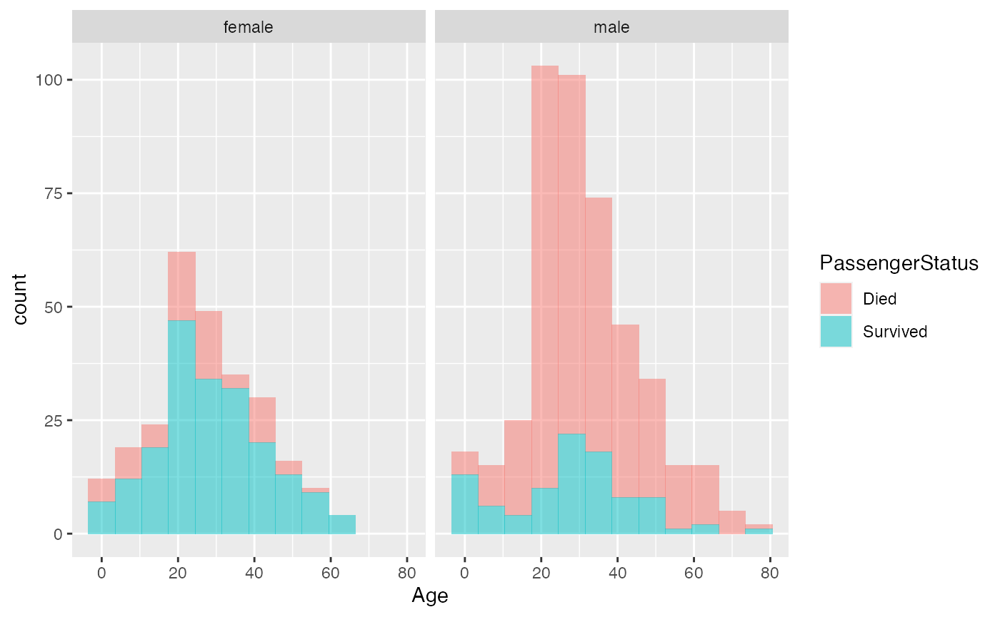
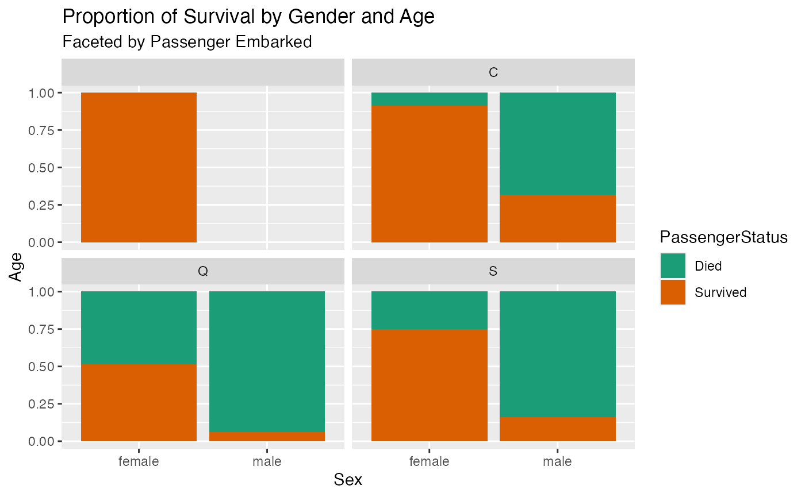

vignettes/exploratory-data-analysis.Rmd
exploratory-data-analysis.RmdGet the training data, see titanic_train for more info.
library(iceberg)
library(data.table)
library(ggplot2)
train <- iceberg::titanic_train
train <- as.data.table(train)
str(train)
#> Classes 'data.table' and 'data.frame': 891 obs. of 12 variables:
#> $ PassengerId: int 1 2 3 4 5 6 7 8 9 10 ...
#> $ Survived : int 0 1 1 1 0 0 0 0 1 1 ...
#> $ Pclass : int 3 1 3 1 3 3 1 3 3 2 ...
#> $ Name : Factor w/ 891 levels "Abbing, Mr. Anthony",..: 109 191 358 277 16 559 520 629 417 581 ...
#> $ Sex : Factor w/ 2 levels "female","male": 2 1 1 1 2 2 2 2 1 1 ...
#> $ Age : num 22 38 26 35 35 NA 54 2 27 14 ...
#> $ SibSp : int 1 1 0 1 0 0 0 3 0 1 ...
#> $ Parch : int 0 0 0 0 0 0 0 1 2 0 ...
#> $ Ticket : Factor w/ 681 levels "110152","110413",..: 524 597 670 50 473 276 86 396 345 133 ...
#> $ Fare : num 7.25 71.28 7.92 53.1 8.05 ...
#> $ Cabin : Factor w/ 148 levels "","A10","A14",..: 1 83 1 57 1 1 131 1 1 1 ...
#> $ Embarked : Factor w/ 4 levels "","C","Q","S": 4 2 4 4 4 3 4 4 4 2 ...
#> - attr(*, ".internal.selfref")=<externalptr>The story goes, that women and children were saved first.
ggplot(train, aes(x=Age, fill=PassengerStatus)) + geom_histogram(position = 'stack', alpha=0.5, binwidth = 7) +
facet_wrap(.~Sex)
#> Warning: Removed 177 rows containing non-finite values (stat_bin).
It does appear that more women (as a percentage of all women) and some males were saved.
ggplot(train, aes(x=Sex, y=Age, fill=PassengerStatus)) + geom_bar(position = 'fill', stat='identity') +
facet_wrap(.~Pclass) +
labs(title = "Proportion of Survival by Gender and Age",
subtitle = "Faceted by Passenger Class") +
scale_fill_brewer(palette="Dark2")
#> Warning: Removed 177 rows containing missing values (position_stack).Dang, you don’t want to be in 3rd class, survival rate for male and female is less than 50%.
ggplot(train, aes(x=Sex, y=Age, fill=PassengerStatus)) + geom_bar(position = 'fill', stat='identity') +
facet_wrap(.~Parch) +
labs(title = "Proportion of Survival by Gender and Age",
subtitle = "Faceted by Passenger Parch") +
scale_fill_brewer(palette="Dark2")
#> Warning: Removed 177 rows containing missing values (position_stack).
ggplot(train, aes(x=Sex, y=Age, fill=PassengerStatus)) + geom_bar(position = 'fill', stat='identity') +
facet_wrap(.~Embarked) +
labs(title = "Proportion of Survival by Gender and Age",
subtitle = "Faceted by Passenger Embarked") +
scale_fill_brewer(palette="Dark2")
#> Warning: Removed 177 rows containing missing values (position_stack).
There are some null age values…
table(is.na(train$Age))
#>
#> FALSE TRUE
#> 714 177
prop.table(table(is.na(train$Age)))
#>
#> FALSE TRUE
#> 0.8013468 0.1986532almost 20% of the observations are missing an age value. If I were to impute age based on the average it would look like the chart below.
train <- iceberg::impute_passenger_age(train)
train$AgeGroup <- cut(train$Age, breaks = c(0,17,30,40,50,65,80), labels = c('<17','18-30','31-40','41-50','51-65','>=66'))
ap <- ggplot(train, aes(x=Age, fill=Sex)) + geom_density(position = 'stack', alpha=0.5)
ap
ap + facet_wrap('Embarked')
prop.table(table(train$Sex,train$Embarked))
#>
#> C Q S
#> female 0.002244669 0.081930415 0.040404040 0.227833895
#> male 0.000000000 0.106621773 0.046015713 0.494949495